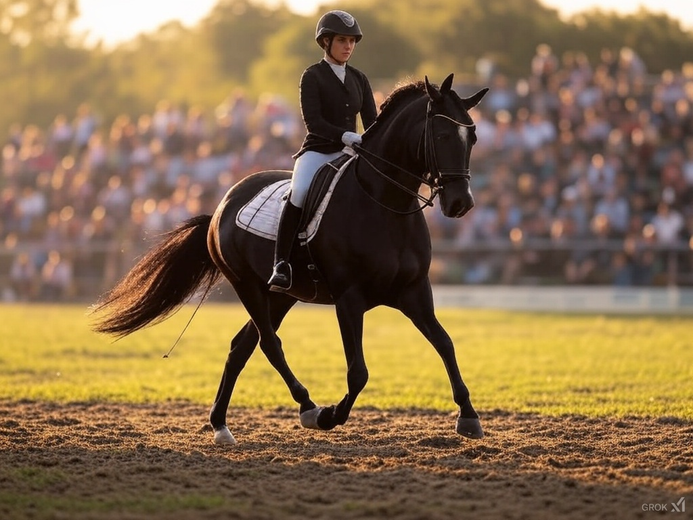

Ny lov truer dansk ridesport
Forbud mod kandarbid kan ramme konkurrenceevnen i 2025
Billede: AI-genereret
En ny lovgivning om hestevelfærd foreslået af Dyreetisk Råd kan ændre dansk ridesport dramatisk i 2025. Rådet anbefaler et forbud mod kandarbid, strengere regler for næsebånd og begrænsninger på pisk og sporer – tiltag, der skal sikre hestenes sundhed, men som får eksperter og ryttere til at frygte for Danmarks position som dressur-verdensmester. Mens nogle hylder fokus på velfærd, kalder andre det en katastrofe for sportens fremtid.
En radikal anbefaling
I december 2024 sendte Dyreetisk Råd en skrivelse til Fødevareministeriet med forslag om at stramme reglerne for heste i sport. Centrale punkter inkluderer et forbud mod kandarbid, som bruges i dressur til at give rytteren finere kontrol, men som kritiseres for at kunne skade hestens tunge. Rådet vil også fastsætte grænser for næsebåndets stramhed og indføre klare kriterier for brug af pisk og sporer. "Vi skal sikre minimumsgrænser for hestevelfærd," lyder det fra rådet, som Fødevarestyrelsen nu arbejder på at omsætte til lov.
Forslaget har skabt bølger i ridesporten. Danmark vandt VM-guld i dressur i 2023, og kandarbid er en standard i internationale konkurrencer. "Det er paradoksalt – vi er verdensmestre, men kan miste vores konkurrenceevne," siger en anonym kilde til Ekstra Bladet. Hvis loven træder i kraft, vil danske ryttere ikke kunne træne med udstyret, mens det fortsat er tilladt i udlandet.
En sport i oprør
Reaktionerne er stærke i ridesportens verden. Formand for Dansk Ride Forbund, Dan Boyter, udtrykker bekymring: "Vi støtter hestevelfærd, men det her kan sætte os tilbage internationalt." Han peger på, at et ensidigt dansk forbud vil gøre det svært for ryttere som Cathrine Laudrup-Dufour og Nanna Skodborg Merrald at matche konkurrenter fra lande som Tyskland og Holland, hvor udstyret fortsat er lovligt.
På sociale medier som X er debatten eksploderet med hashtags som #Hestevelfærd og #BevarRidesporten. Dressurrytter Anna Jensen fra Sjælland skriver: "Kandarbid er ikke djævelens værk – det handler om, hvordan det bruges. Et forbud rammer os, der rider ansvarligt." Andre, som dyrevelfærdsaktivist Line Petersen, bifalder: "Endelig tager vi hestenes sundhed alvorligt – sport må ikke gå over velfærd."
Konsekvenser for Danmark
Hvis loven vedtages, kan danske ryttere stå over for et dilemma: Træne uden kandarbid hjemme og kæmpe med tilpasning til internationale stævner, eller flytte træning til udlandet, hvilket kan koste dyrt. "Det bliver en økonomisk og logistisk katastrofe," siger træner Mikael Sørensen fra Aarhus. Han frygter, at talenter som juniorryttere vil søge mod udenlandske klubber, hvilket kan tømme Danmark for fremtidige stjerner.
Samtidig kan forbuddet ramme bredden. Lokale stævner og rideskoler, der bruger kandarbid til uddannelse, skal investere i nyt udstyr og træning – en udgift, mange små klubber ikke har råd til. "Det er ikke kun eliten, der lider – det er hele sporten," siger Sørensen.
En balancegang fremad
Debatten handler om mere end udstyr – det er en kamp om ridesportens identitet i Danmark. Fortalere for loven ser det som en chance for at sætte en ny standard for etik i sporten, mens kritikere frygter, at Danmark mister sin plads på verdensscenen. "Vi skal finde en mellemvej," siger Boyter og foreslår dialog med ministeriet om mindre indgribende løsninger.
For nu venter ridesporten i spænding på Fødevarestyrelsens beslutning, der kan komme inden sommeren 2025. Hvis forbuddet bliver en realitet, står Danmark over for et valg: tilpasse sig en ny virkelighed eller kæmpe for at bevare sin arv som dressurens verdensmester.